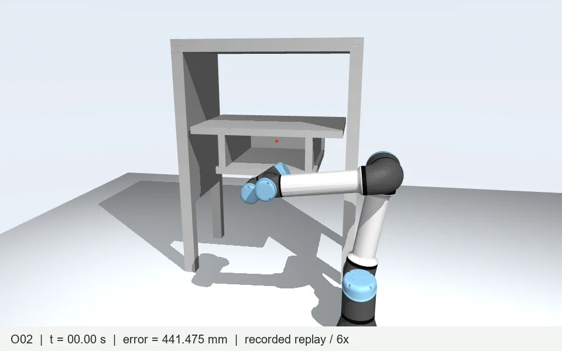

SPHEREK01
FINAL POSITION ERROR314.165 mm
Not reachedOne robot. A narrow cabinet.
Exploring how obstacle geometry and online perception shape the path to a goal.

Follow the saved motion and obstacle representations. Online maps appear only when their recorded generation was published.
Recorded kinematic simulation, not an in-browser controller. Blue certificates show ellipsoid cores; green spheres represent the robot. Separate uncertainty is part of control but is not fully drawn here.
Reach confirmation requires error < 1 mm for 50 consecutive steps. Completion time and solver computation time are different measurements.
Wrist and forearm cameras capture depth from the current robot configuration.
Fuse observations and construct sphere or ellipsoid proxies with coverage checks.
MVT selects candidates. Distance kernels turn relevant pairs into collision constraints.
The QP returns joint velocity. The runner integrates it and records the next state.
Fifteen runs completed the planned 60 seconds. Four stopped early. Each configuration was attempted once; these counts are not a statistical success rate.
| Case | Configuration | Final error | Confirmation | Outcome |
|---|
46 / 300 mm are NEO obstacle influence distances, not proxy radii. NEO is a local position-task core adaptation. Ablations remove its manipulability objective term.
Task success does not imply complete sensing, continuous hardware safety, or a universally better controller.
A fast control loop can still act on old information. Proxy construction and coverage verification dominate the measured perception cost.
MEDIAN MAP AGE DURING CONTROL · O01 / O02
Median age at publication: 3.00 / 1.24 s. Mean MVT construction/audit: 5.8 / 3.5 ms. Improving the index alone will not remove seconds of perception delay.
The index considers the obstacle AABB and robot query extent. Small adaptive spheres can fall into the same two coarse layers.
530 IN 120 mm CELLS / 3,277 IN 240 mm CELLS
Illustration of the recorded LiuQP assignment rule, not a new experiment. Higher layer means a larger cell, not a sphere of that diameter.
The current O02 surface-core representation remains thin: median shortest semiaxis 0.124 mm and median longest semiaxis 26.73 mm. Measurement uncertainty and residual coverage remain separate.
A historical 5.1 experiment used continuous measurement-support ellipsoids and achieved a median short/long axis ratio of 0.484, but required 14,064 proxies and still had sensing delays. ET30 separately imposed a 3 mm minimum core semiaxis. Neither configuration is an additional run in this 19-case batch.
Saved states show no physical penetration, and recorded intervals pass the audited 6 mm robot-sphere–cabinet-box clearance check. Online observability conditions still fail. This does not establish continuous self-collision, floor, or hardware tracking safety. Sphere online runs also contain QP iteration-limit events.
The English overview explains the directory, controller ownership, results, failure mechanisms, map latency, and MVT assignment. Start there, then follow the dispatcher into a controller.
README.md
└─ experiment/batch.py
└─ experiment/run_case.py
├─ runtimes/known/
├─ runtimes/historical/
└─ runtimes/online/
├─ perception + publication
├─ controller.solve()
└─ geometry + MVT
evidence/ → recorded trajectories
docs/ → this project website